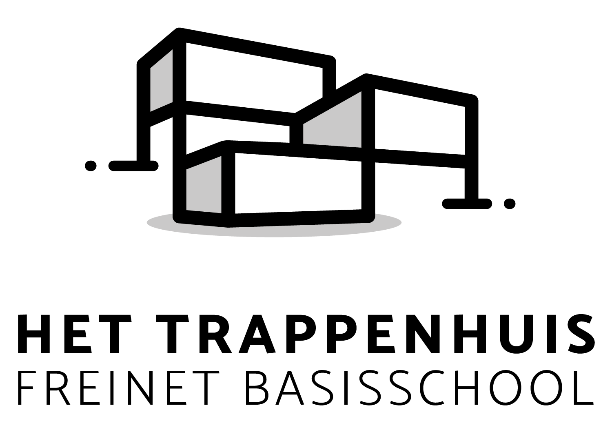
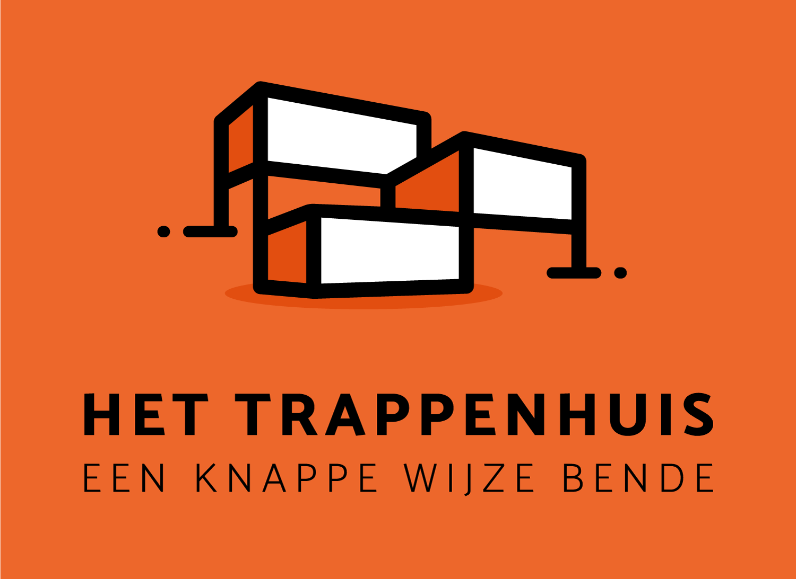
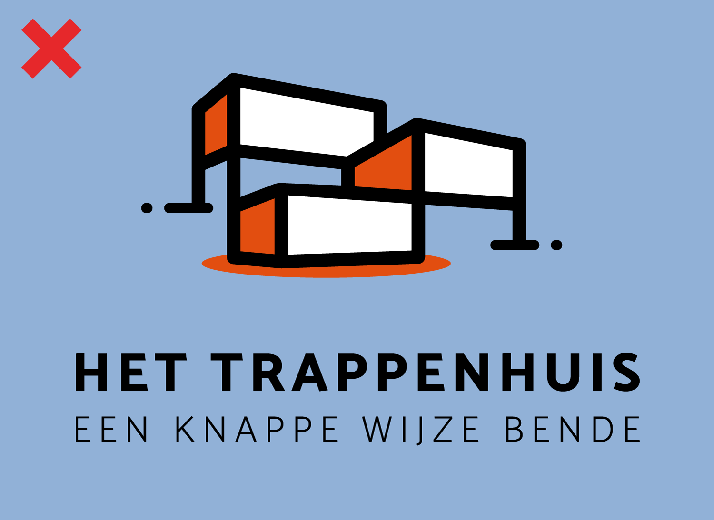
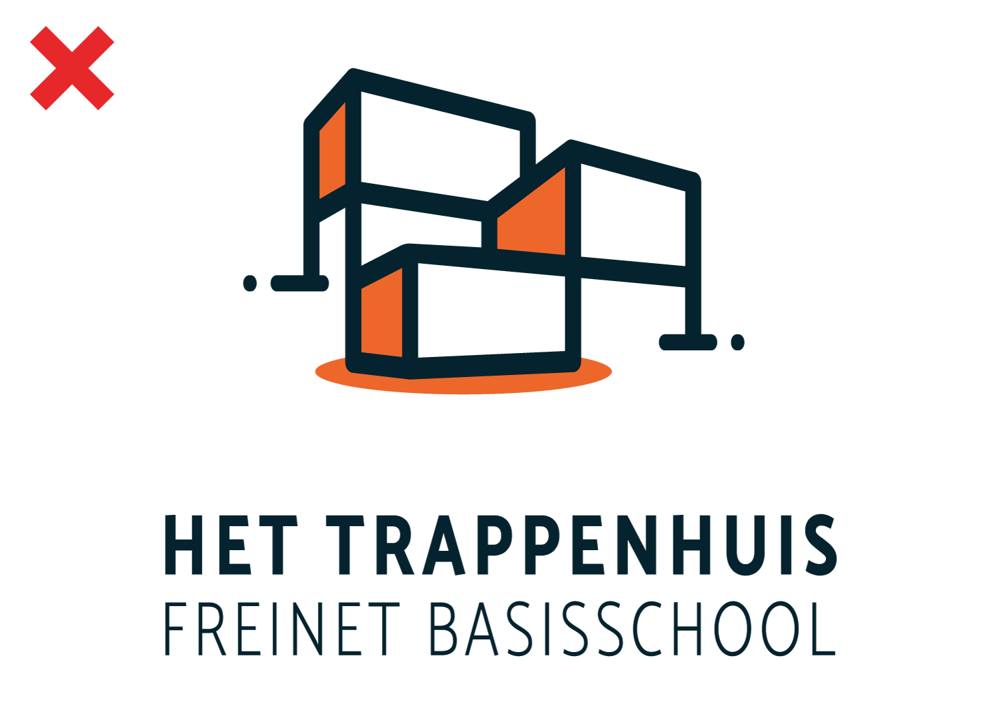
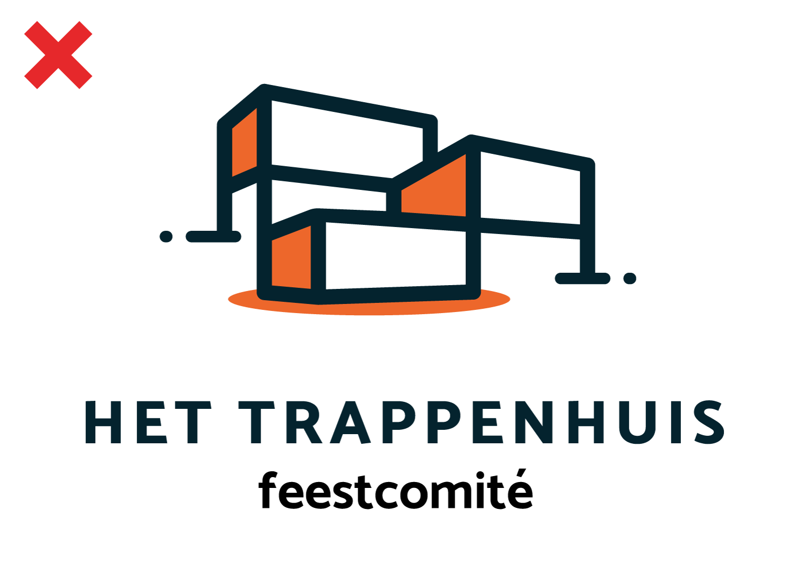

Het Logo
Er bestaat 1 basis logo (op een witte achtergrond) en 2 varianten: een donker gekleurd logo voor op het oranje kleur dat centraal staat in deze huisstijl en een variant met andere baseline. Het logo bestaat uit 2 grote delen. Het icoon en de tekst. Het icoon is een eenvoudige maar herkenbare voorstelling van de gevel van Het Trappenhuis.
Witruimte rondom het logo
De minimale witruimte rondom het logo heeft de waarde X gekregen. X staat gelijk aan 2x de hoogte van de kapitaalletter in het logo.
We hebben het hier over de MINIMALE witruimte. De ruimte rondom het logo kan natuurlijk altijd groter zijn dan het door ons voorgelegde kapitaalhoogte.
Uitzondering! Als het logo gebruikt wordt op klein drukwerk (briefhoofd, telex,...) dan zal het logo kleiner zijn. Bij klein drukwerk nemen we dan een standaard breedte van 40mm bij het logo. De minimale witruimte vanaf de rand van het papier zal dan aangepast worden naar 20mm ipv de vorige x-waarde. Bij de visitekaartjes en fietsplaatjes houden we rekening met de normale minimale witruimte want hierbij heeft het logo telkens een andere grootte.
Varianten
Het basis logo is dus niet de enige vorm van hoe het logo kan vertoond worden. Er is keuze uit nog 3 andere vormen. 2 vormen met aanpassing van de kleur en 1 vorm met aanpassing van de baseline, die ook kan gebruikt worden in combinatie met de kleur aanpassing.
Aanpassing van het logo met de baseline van Het Trappenhuis.

Het logo in grijswaarden.

Als het logo vertoond zou worden op de oranje kleur die centraal staat
in de huisstijl, dan moet deze versie van het logo gebruikt worden.
Foutief gebruik van het logo
Aan het logo en baseline mag niets veranderd worden behalve uitzonderingen. Een aantal voorbeelden hiervan die niet kunnen:
Kleuren mogen niet gewijzigd worden
Logo mag niet vertoond worden op een ander gekleurde achtergrond zonder de scheiding van een wit vlak.
Het logo mag niet foutief geschaald worden
Geen gebruik van transparantie op het logo
Baseline mag niet gewijzigd worden.
Uitzondering voor logo variant.
Kleuren mogen niet gewijzigd worden